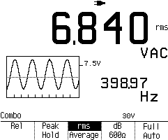

Metret har autorange og 6½ betydende cifre og et enkelt betjeningspanel.
Menu i Datalyse
Grafisk måling
Baudrate 9600, ingen paritet, 2 stop, 8 databit. Der kan benyttes et Nul-modemkabel eller det medfølgende RS232C-usb kabel.
Kommando "*IDN?" for version.
Der kan måles VAC, VDC, ADC, AAC, modstand, frekvens, periode og diodetest.
For at få forbindelse fra multimetret vha. serielt interface skal man taste følgende på apparatet.
Desuden skal man første gang indstille 8845A til Fluke 45 kommunikation. Det gøres ved:
Denne indstilling huskes, når apparatet slukkes.
Menu i Datalyse
Grafisk måling
Vis måling
Enkelt skopbillede, Flukes grafiske billede overføres.
Løbende skop, (t,y) - skop.
Kopi skærm, kopierer skærmbilledet til klippebordet.
Baudrate 19200, ingen paritet, 1 stop, 8 databit.
Apparatets baudrate kan eventuelt stilles i »SET UP«.
Kommando "ID" for version.
Ved »Enkelt skopbillede« eller ved »Løbende skop« overføres ca. 900 bytes pr. billede. Der går derfor 1-2 sekunder mellem hver opdatering. Billedet består af 256 værdier med 8 bits opløsning. Skopfunktionen er illustrativ, men nøjagtigheden er ringe. I øvrigt af metret meget nøjagtigt!
Fluke 867B multimeter med grafisk display måler samtidig spænding, strøm,... og frekvens. Metret har autorange og 5 betydende cifre. Det har et enkelt betjeningspanel med knapper og visning af funktion i det grafiske display.

Displayet kan kopieres til klippebordet i menupunktet: Kopi skærm.
Der kan måles VAC, VDC, mV HiZ (1000 Mohm), ohm, logik, mA/mA, ADC/AAC (begge dele samtidigt), komponent test (grafisk display) og logik.
Der er infrarød tilslutning af kabel, så man skal have et specielt kabel fra Fluke.